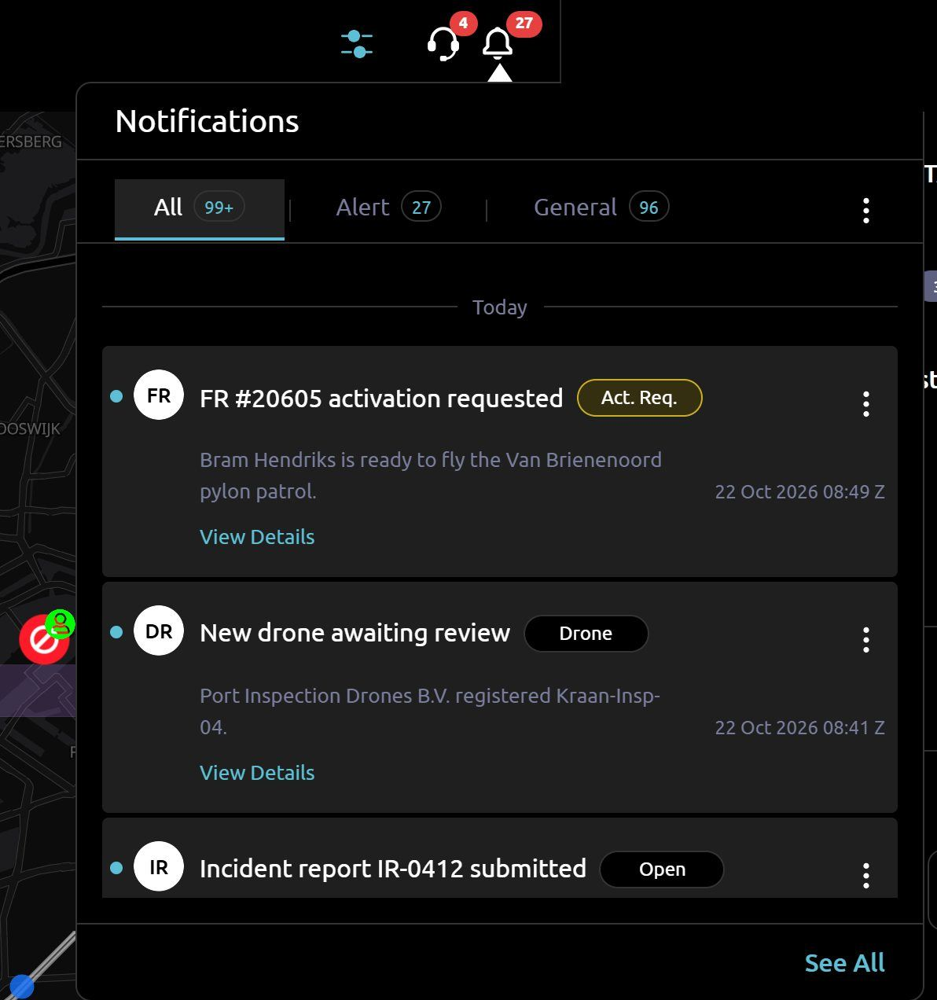

Case 01 · AstraUTM platform
A notification centre with live alerts and sound
Pilots and authority staff get every update in one place: unread counts on the bell, three tabs, links straight to the record, and a sound when something new arrives. I built the feature and later rebuilt its data layer.
- React
- TanStack Query
- Zustand
- TypeScript
- Vitest
The problem
Updates about flight requests, drones, incidents and users had no single place to land, and new ones were easy to miss.
My part
- The bell popup with Alert, General and All tabs, unread badges and links by record type.
- The full notifications page, grouped by day, with infinite loading.
- Bulk and single mark-as-read and delete, with a confirmation step.
- A chime when the unread count rises and a looping siren during an emergency, both behind a global mute.
- A typed notification API in TypeScript with a query-key factory, and updates that show instantly and roll back on failure.
Result
85% of the notification code is mine, and I wrote 43 of its 44 test cases.


// mark as read: update the list first, // roll back if the server says no const markRead = useMutation({ mutationFn: NotificationApi.markAsRead, onMutate: (ids) => applyOptimisticRead(client, key, ids), onError: (_err, _ids, ctx) => rollback(client, key, ctx), onSettled: () => client.invalidateQueries({ queryKey: key }), }); async function applyOptimisticRead(client, key, ids) { const read = new Set(ids); await client.cancelQueries({ queryKey: key }); const previous = client.getQueryData(key); client.setQueryData(key, (data) => ({ ...data, pages: data.pages.map((page) => ({ ...page, notifications: page.notifications.map((n) => read.has(n.id) ? { ...n, isRead: true } : n), })), })); return { previous }; }